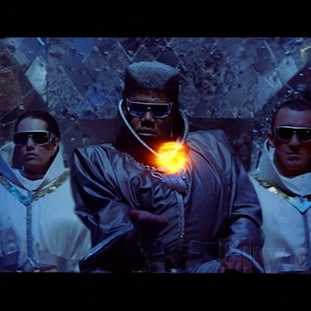

class: center, middle, orange, small-font, small <img alt="omada" src="images/omada_logo.png" height=200 width=200> # Hiring Processes ## Austin Putman, @austinfromboston ??? My name is Austin Putman, I'm VP of Engineering at Omada Health. We're working in Ruby, Rails, Coffeescript, iOS and Android to create a new model of digital therapeutics. Our first product, is Prevent, at preventnow.com. It helps people with prediabetes lower their risk of developing type 2 diabetes. Our goal is that doctors reach for preventative interventions before they reach for a prescription pad. And it is awesome. --- ## That Don't Waste Time ??? Let's get started right away. We're here to talk about hiring, a subject that is near and dear to my heart. We'll talk a little bit about recruiting, but the heart of this talk is about how to evaluate a candidate effectively and sell them on your company at the same time. --- ## What makes a good candidate? ??? A good candidate is someone who will add value to your team. A great candidate is someone who will transform your team. If we are honest with ourselves, once we have a set team culture, and that culture is productive, we are rarely eager for it to be transformed. Which is why it is a waste of time to look for "rock stars" when we really want solid, productive team players. What makes a good candidate depends on your project and your existing team, but you should take the time to list out what really matters to you. Here's my list. --- ## Experience with your key technologies ??? A good candidate has experience with your key technologies. Of all the qualifications a candidate can have, this is the most negotiable. --- ## Experience (optional) ??? Any self-taught engineer knows that it is possible to create a viable project using an unfamiliar technology. The code will almost certainly be wrong and nightmarish to maintain. And it may take longer than it would with an experienced coder, but it is possible to do it if you are willing to accept these risks. In many cases, Getting a veteran or a protege to learn your technology may be the best option you've got. How fast they can learn is something you need to find out during the interview. --- ## Experience (your burn rate) ??? If your candidate is experienced in your technology, you'll want to find out how deep their experience runs. If your work is in Rails, work with them in Rails. or whatever your technology is, whether that's objective-C, or assembler. Point is, in today's tech market, you are paying a premium for experience in a particular technology, and you want to know that you are getting your money's worth. --- ## Solid communication skills ??? Everyone values good communication. But how does communication happen in your team? Is it via Slack or IRC? Is it in-person standups and shoulder-tapping? During the interview, you want to see how your candidate uses these tools. Put them in the IRC channel during the interview. See how and when they ask for help if you give them a problem to work on in isolation. Most importantly, how do you and your team mates feel about communicating with this candidate? Good communicators in a stressful interview environment will still be able to form bonds with their evaluators. These bonds are the seeds of trust, and trust is what builds a team. --- ## Takes joy in solving (your) problems ??? Good developers enjoy their work at a personal level. That's one reason many excellent coders put in so much overtime -- solving problems is an addictive process. For some folks, coding is like playing a video game that produces tangible results. An sensitive evaluator should be able to tell the difference between a candidate who is doing what is required for the interview and one who is actually interested in the problem being worked on. Take advantage of this by sharing real work from your project with candidates. It could be on an abandoned branch, but give them the chance to see the scope of the problems they'll be working on in the day-to-day. That way when they accept your offer, they know what they're signing up for. --- ## Takes joy in learning ??? Many coders, myself included, love showing what they can do and struggle when they get outside their comfort zone. Take the opportunity to observe the candidate working in a foreign environment. Simply having to learn something about your codebase is a place to start. You might also try a kata screen using a language they don't know, we'll talk more about that later. --- ## Wants to work on your team ??? The other key thing about a good candidate is that they are looking for you. And you should have a process that puts your best assets forward. Maybe you have a truly game changing technology, or can bid higher than anyone else. But probably not. In today's talent market, unless you work for one of the major players, you can't afford to compete on price. People will choose your company because they like the coworkers and the leaders and they enjoy the culture within the office. --- # Empathy ??? Finally, a good candidate naturally develops an emotional connection to the people around them and wants to help them with their problems. This is gonna make thing with your project manager, your business stakeholders, and your customers work better. Most importantly, this will help you when it comes time to recruit additional members to your team, and it will help you train and mentor those people. --- ## Finding good candidates ??? Once you know what you're looking for, how do you go about finding these people? As an engineer with ten years of experience, I've gone through many interviews that I failed. I've talked to many others who have had the same experience. People often don't look for new jobs because they hate the interview process. With a market this tight, that's just silly. Let's do a quick rundown of common practices and their problems. --- ## Contingency recruiters ??? There are good recruiters out there, but the incentives are lined up against employers. These folks are motivated to either spam you or ignore you if you aren't responsive to spam. Their incentives are with the candidates, not with the employers. You may make a good hire or two from them, but using them extensively is not strategic, not to mention expensive. --- ## Technical phone screens ### (antipattern) ??? So the recruiter has sent you a candidate. You can't waste engineers' time on every candidate, so maybe you have a set of pre-set questions that your HR team asks when deciding whether or not a candidate is worth your time. Unfortunately, talking about code over the phone is almost intrinsically terrible. And telling a non-coder about the pull-requests you've had accepted on a useful gem is boring at dinner parties and equally awful in interviews. --- ## Whiteboard coding ??? Assuming they handled a multiple choice phone screen, now you bring them to a room with a whiteboard to demonstrate that they can write code. You'll give them FizzBuzz, or implementing a queue, or fibonacci, and then ask them for arbitrary optimizations. This will demonstrate whether they were paying attention in CS 201 and 301, as well as how good their penmanship is. The thing is, writing code on a whiteboard is orders of magnitude slower than doing it on a computer. You learn nothing about their typing speed or what tools they like to use. If you take nothing else from this talk, move your whiteboard exercise onto a computer. Use a projector and two keyboards so that your interviewer can play along. Moving the technical exercise off the whiteboard gives you more information and more options. You can see how your candidate organizes their code. You can provide malfunctioning code and see how they improve it. You can even run tests. More importantly, you can get a glimpse of how your candidate handles complexity. Dealing with complexity well is one thing that distinguishes a senior engineer. --- ## The Gauntlet ??? After a candidate goes through one technical exercise, they often have to do another with another interviewer. Some teams want every person to sign off before a hire. As a candidate, this is an awful experience. Building up a rapport with an interviewer is significant work and by the 3rd set of folks they're pretty tired. Definitely get 2 opinions on the technical screen. If you need more than that, have a 2nd interview round and let the candidate get some sleep. --- ## The Gang-Up ??? Sometimes, to save time, you'll have a panel do the technical interview. This one-on-many dynamic is naturally adversarial, just ask anyone who's been through Senate confirmation hearings. You're creating an environment for a performance, rather than evaluating the quality of the person's work. What do you get if you optimize your interview process for people who enjoy showing off? --- # What am I missing? ??? Rather than optimizing for folks who have read the "how to crack the google interview" book and are great at performing in adversarial situations, I want an interview process that shows me how quickly folks will learn my stack, that they are deeply interested in my problems, and that they'll be able to form meaningful relationships with the other people on the team. --- # How To ??? These are my aspirations for how to build a recruiting pipeline right. --- ## Trust your recruiter ??? Get a recruiter who works for you, rather than being paid by commission. This can be a contract or full-time role. There's a new service called RecruitLoop if you aren't big enough to afford a full or part-time position for handling this. We got a business team intern who at least handled screening the resumes that come from the contingency recruiters. In any case, put someone between you and the constant spam that comes from the recruiting industry. --- ## Have Lovable Phone Screens ??? In the phone screen, the key question that needs to be answered is "do I want to spend eight hours with this person?". This is a short stop on the long hike to answering "Do I want to spend the next year with this person?" The person on the other end of the phone is asking the same question. This is your first impression on them and sets up whether your company is in the running to be their first choice. Every team has people who help define their culture. As a hiring manager, it may be you. If someone else comes to mind, have that person do some phone screens. Start figuring out cultural fit early and let the other person know what you're about. --- ## Phone screen checklist - Do I want to spend a workday with this person? - Able to communicate clearly about their work? - Wants to do the job we need done? - Am I likely to hire this candidate? ??? Have a checklist of questions so your evaluators are clear about what they're looking for. Here's mine, and as you can see it's half gut-check questions. Is pushing this candidate through the process a good use of my time and theirs? It's not worth it to me to hire someone if my gut tells me I shouldn't. How do I find out if someone wants to do the job we need done? I usually ask a question like "what role are you really looking for in your next gig?". You'd be amazed how many people tell me it is their dream to be a product person. And I want them to achieve that dream. So I don't hire them. --- ## Fast, Relevant Technical Screening ??? Pivotal has a terrific process for fast technical screening called the RPI, for "Rob Pairing Interview". Rob is the CEO, but the RPI is performed by managers at many levels. It takes less than an hour, and at the end you're usually told immediate whether you should come back for an in-depth interview. The RPI is a pairing exercise where the candidate is not allowed to type, they just look over the evaluator's shoulder and suggest how to approach a problem. Because they aren't typing, they don't even have to be familiar with the language being used. If they've seen curly braces before, they'll be able to handle the code. The problem Pivotal uses is to implement a basic data structure from scratch. --- ## Kata screens ??? I'm calling this 'kata screening', because the evaluator should practice the exercise many times before using it. You can start by pairing with every existing member of your team, to get a sense of the levels you already have. --- ## Fast technical screens - Evaluator must have deep familiarity - Candidate shouldn't need to know the tools - Pairing ??? Fast relevant technical screening should have the following traits: - Evaluator should have deep familiarity with the problem - Candidate should not have to be familiar with the language/tools being used in advance. - Pairing allows the interviewer to control the duration of the exercise, and gather enough information to evaluate well. --- ## The output is the work ??? There is a key difference between this approach and the problem-set approach of a service like interview street. Brain teasers look at the outcome of their work. You want to be in the room with them, observing their way of working, what they are looking up, and how they interact while they work. --- ## In-depth Technical Assessments ??? So your candidate has passed a kata screen. Now you want to know how deep a person's skill goes. In my case this helps me gauge how much to pay them. The only reliable means of thoroughly evaluating the skill of a programmer is to use a better programmer. You want to know how long it will take your candidate to come up to speed, as well as how they get along with your existing team. We handle this via a daylong pairing interview. Basically, it is their first day of work. They show up for morning standup, spend the morning pairing with one person and the afternoon pairing with another, and go to lunch with the rest of the team. At five o'clock the hiring manager asks how their day went and if they have any questions that are still unanswered. A whole day is a lot of time. But in that 5 o'clock conversation, it is usually crystal clear whether the candidate wants to work for us or not. Which reduces the time I spend negotiating with folks who are trying to play me off against a preferred employer. --- ## Do real work ??? We have our candidates do real work from our backlog. We try to find stories that don't require them to understand the entire stack. Especially for senior candidates, though, watching them go after a bug in an unknown codebase is a beatiful thing to behold. It also means that interviews don't completely kill our productivity. It is possible for interviews to actually produce usable code, though most don't. --- ### Evaluating your candidate ??? At the end of a half-day of pairing, the interviewers are left with a mess of impressions. The social ones are important, as are the technical details. To help them sort through it, we use a quantitative evaluation that also supplies room for anecdotes. After they've made their ratings, they are asked to recommend for or against hiring. A 'No' from any evaluator blocks the hire. A 'Not Sure' from any evaluator is probably a 'No'. --- ## What we evaluate - Technical Process - Technical Skill - Communication - Leadership ??? We ask the evaluator to consider how the candidate works, what they already know, how effective they are in communicating, and whether they have leadership qualities that would be useful to the team. It's a set of about 25 questions on a scale of 1-4. --- ## Evaluating in a new technology ??? What if you're hiring for a technology you don't know? We're hiring an Android developer right now and we don't have any Android devs on our team. We've asked these candidates to come in and pair with us on a piece of work that they've already done. At the very least, we can find out how competent they are as a pair and a teacher. As a final step, we've gotten a recommendation for an experienced Android consultant. If we get a very senior candidate, this person can help us hire with confidence as well as help us set salary expectations. --- ## Hiring a diverse team ??? This is something a lot of teams struggle with -- it's easily worthy of its own talk. Personally I feel constantly deluged by young white men with no experience looking for an opportunity to prove themselves. --- ## The Rooney rule ??? A few years back the NFL noticed that its coaches were all white guys. They implemented a rule that for any open head coaching position, a minority candidate had to be considered. Just having to interview a minority candidate for each job has increased the number of minority head coaches in the NFL to 22%. What would 22% look like on your team? Now, I know that this isn't easy. You can't put out a job ad that says "Latina C++ coder". But you can move some of your recruiting budget into sponsoring organizations of Latina and Latino coders. Just covering costs for a meetup and going out to say hello is the first step in a relationship that could really transform your team. If your team is lacking diversity, which it probably is in multiple dimensions, pick an area of focus and do some outreach, until you can confidently say that you are considering candidates from that demographic for every open position. There will be a lot more to do after that, but it's a first step. --- ## False positives ??? Take the first 90 days seriously. A new team member who doesn't work out causes serious stress for the hiring manager and the team. Keep a close eye on their progress, via code review and verbal feedback from colleagues, over the first 30 days. By the end of that first month you should know whether they are tracking ahead or behind your minimum expectations. At 30 days you should let them know where they stand and if anything needs to change. Handling these issues early lets the team know that you will make sure they are working with the best people you can get. --- ## False negatives ??? I've definitely seen some folks fail the technical screen that I had high hopes for. Almost certainly, sometimes someone is just not having their best day. It's natural to want to give them another chance. No interview process is perfect, and the information you are getting from the process is mostly random facts that build up to create an impression, and that impression is what you are judging when you decide to move forward or not. Never get this impression confused with the person. ---  ## Be excellent to each other ??? Always take the time to offer the same kind of helpful feedback that you'd like to receive. Your unsuccessful candidate inevitably has a promising career in technology and will probably be your interviewer one day. So do yourself a solid and be excellent to your candidates whenever possible. --- class: center, middle, orange <img alt="omada" src="images/omada_logo.png" height=200 width=200> ## Thank You! @austinfrmboston @omadahealth